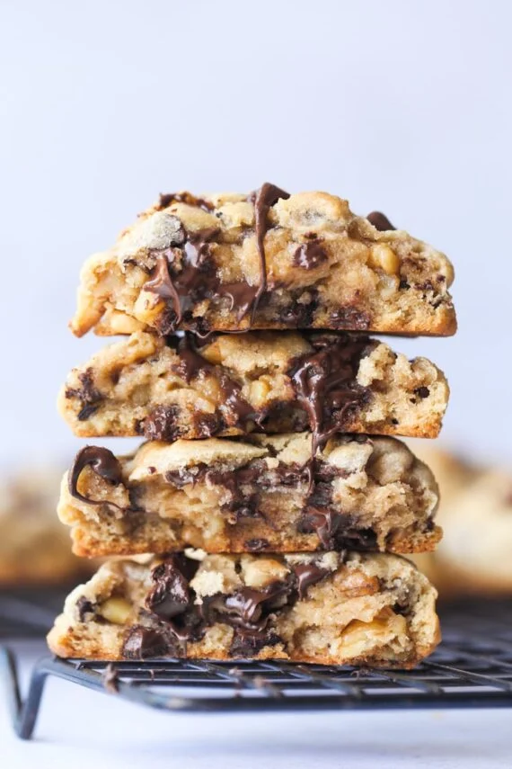

Chocolate Chip Walnut Cookies

Description
The thickest, softest chocolate chip cookies loaded with chocolate chips and chopped walnuts! If you have ever
had a cookie from Levain Bakery in NYC you will love these!
- 1 cup cold salted butter cubed
- 1/2 cup dark brown sugar
- 1/2 cup light brown sugar
- 1/2 cup granulated sugar
- 2 eggs
- 2 teaspoons vanilla
- 1 teaspoon kosher salt
- 1 teaspoon baking soda
- 2 teaspoons cornstarch
- 3 cups all purpose flour
- 2 1/2 cups chocolate chips
- 1 1/2 cups chopped walnuts
Steps
- Preheat the oven to 400°F. Line a baking sheet with parchment paper and set aside.
- In the bowl of your stand mixer fitted with the paddle attachment mix together the butter and all the sugars
together for 30 seconds on low speed. Turn the mixer up to medium speed and mix for 4 minutes until combined
and fluffy.
- Add in the eggs, vanilla, salt, baking soda, and corn starch and mix for 1 minute until smooth, scraping the
sides of the bowl as necessary.
- Turn the mixer to low and add in the flour, mixing until just combined.
- With mixer still on low, add in the chocolate chips and walnuts until incorporated.
- Using a large (3 tablespoon) cookie scoop, portion the dough onto the prepared baking sheet 2 inches apart.
- Bake for 8-9 minutes, until the edges and tops are lightly golden.
- Allow the cookies to cool for 2-3 minutes on the baking sheet, and then transfer to a wire rack to cool
completely.